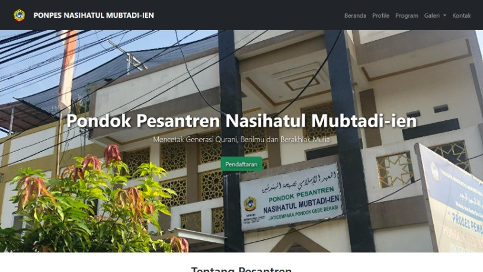
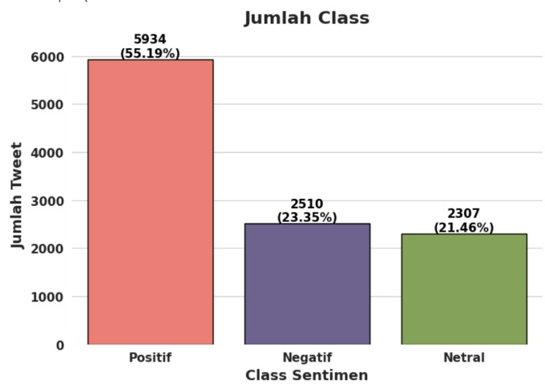
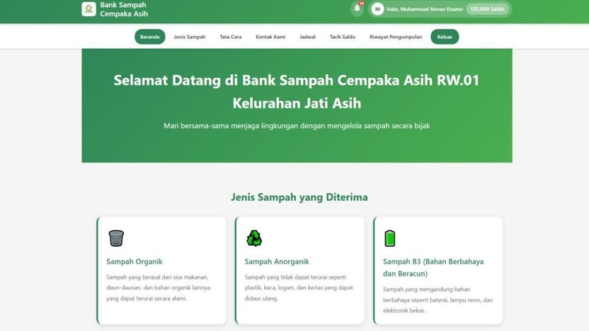

Web Development
HTML, CSS, PHP, Laravel, dan pengembangan antarmuka responsif.
Halo, saya
Lulusan S1 Sistem Informasi Universitas Gunadarma dengan pengalaman proyek pengembangan aplikasi, analisis data, serta pengalaman kerja lapangan di bidang pengantaran dan pengelasan. Terbuka untuk kesempatan di bidang teknologi, administrasi, layanan, dan operasional.
Saya Rahmat Julianto , lulusan S1 Sistem Informasi Universitas Gunadarma . Saya memiliki dasar teknologi informasi, mulai dari pengembangan aplikasi web, pemrograman, pengolahan data, hingga pemecahan masalah berbasis teknologi.
Selama perkuliahan, saya mengerjakan berbagai proyek aplikasi dan penelitian yang membantu saya mengembangkan kemampuan teknis, berpikir analitis, dan bekerja secara terstruktur. Di luar bidang teknologi, pengalaman sebagai Driver HappyFresh dan Helper Pengelasan mengasah kedisiplinan, pelayanan, ketelitian, kerja tim, keselamatan kerja, dan kemampuan beradaptasi. Saya terbuka untuk posisi IT maupun non-IT yang sesuai dengan kemampuan saya.
Kombinasi keterampilan teknis, analitis, dan operasional yang saya pelajari melalui kuliah, proyek, serta pengalaman kerja.
HTML, CSS, PHP, Laravel, dan pengembangan antarmuka responsif.
SQL, MySQL, Python, pengolahan data, visualisasi, dan analisis dasar.
Pemahaman desain antarmuka, dokumentasi, dan alur kerja pengembangan aplikasi.
Ketepatan waktu, pengantaran pesanan, koordinasi lapangan, pelayanan pelanggan, kesiapan alat kerja, dan kepatuhan prosedur keselamatan.
Beberapa proyek pembelajaran dan penelitian yang pernah saya kerjakan.

WEB APPLICATION 02Website informasi pondok pesantren yang mencakup profil, galeri kegiatan, dan formulir pendaftaran santri.
Proyek Penelitian ↗
DATA ANALYTICS 03Penelitian klasifikasi sentimen publik terhadap Program Makan Bergizi Gratis di media sosial X menggunakan Support Vector Machine.
Proyek Penelitian ↗
WEB APPLICATION 04Aplikasi Web Bank Sampah dengan fitur registrasi, login, pencatatan setoran sampah, serta halaman pengelolaan data dan laporan transaksi sampah.
Proyek Akademik ↗* Foto proyek saat ini adalah gambar contoh. Cukup ganti JPG pada folder assets/proyek dengan screenshot proyek kamu.
Pratinjau dokumen PDF dari sembilan pelatihan Universitas Gunadarma. Pilih “Buka PDF” untuk melihat dokumen lengkap.
Pengenalan pengembangan aplikasi berbasis web.
Universitas Gunadarma
Buka PDF Sertifikat ↗Memahami konsep dan struktur perancangan web.
Universitas Gunadarma
Buka PDF Sertifikat ↗Penggunaan dan pengelolaan basis data Oracle.
Universitas Gunadarma
Buka PDF Sertifikat ↗Pendalaman dasar logika dan bahasa pemrograman Go.
Universitas Gunadarma
Buka PDF Sertifikat ↗Pengenalan basis data dan pengoperasian Oracle.
Universitas Gunadarma
Buka PDF Sertifikat ↗Dasar sintaks dan logika bahasa pemrograman Go.
Universitas Gunadarma
Buka PDF Sertifikat ↗Pengenalan instalasi jaringan komputer nirkabel.
Universitas Gunadarma
Buka PDF Sertifikat ↗Konsep dasar pengelolaan dan manajemen basis data.
Universitas Gunadarma
Buka PDF Sertifikat ↗Dasar pemrograman untuk aplikasi web.
Universitas Gunadarma
Buka PDF Sertifikat ↗Saat ini PDF pada paket ini adalah contoh tempat file, BUKAN sertifikat asli. Timpa kesembilan PDF contoh dengan sertifikat milikmu sebelum portofolio dipublikasikan.
Menangani pengantaran pesanan, mengatur waktu dan rute, berkoordinasi saat proses pengiriman, serta menjaga pelayanan yang baik kepada pelanggan.
Membantu menyiapkan alat dan material, mendukung pekerjaan pengelasan, bekerja sama dengan tim lapangan, serta memperhatikan kerapian dan keselamatan kerja.
Mempelajari pengembangan sistem informasi, pemrograman, basis data, analisis sistem, dan teknologi informasi.
Pengalaman belajar dalam lingkungan pendidikan Islam yang menekankan kedisiplinan, tanggung jawab, kemandirian, dan nilai kebersamaan.
Saya terbuka untuk kesempatan kerja dan kolaborasi di bidang teknologi informasi, analisis data, administrasi, layanan pelanggan, maupun operasional. Mari terhubung!
Kirim Email ↗